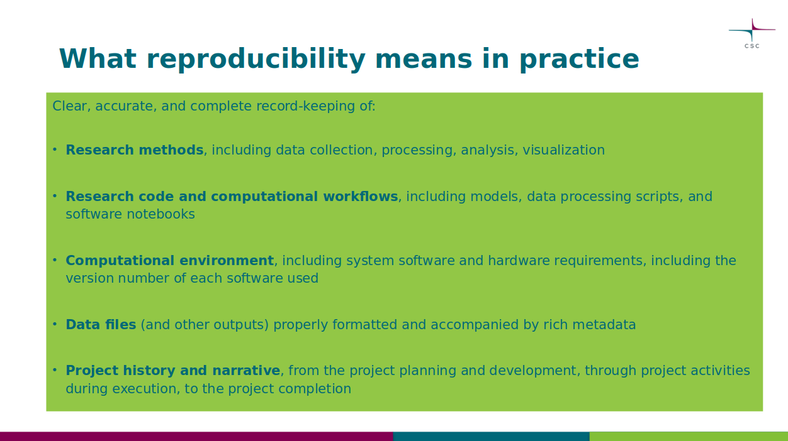
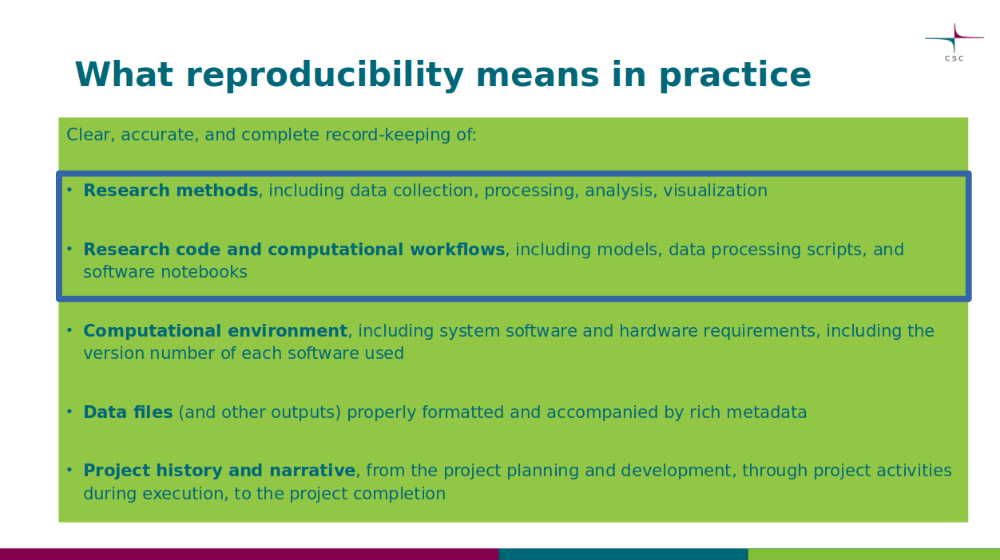
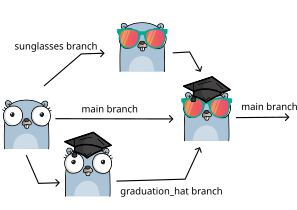
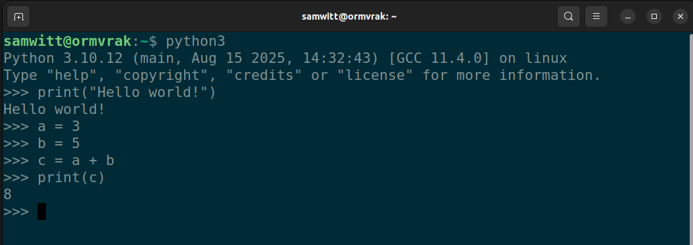
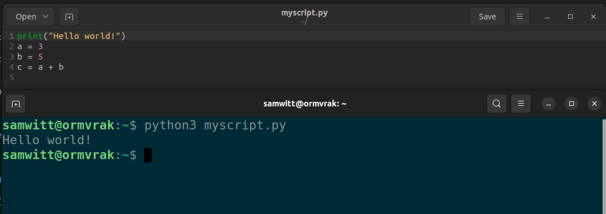
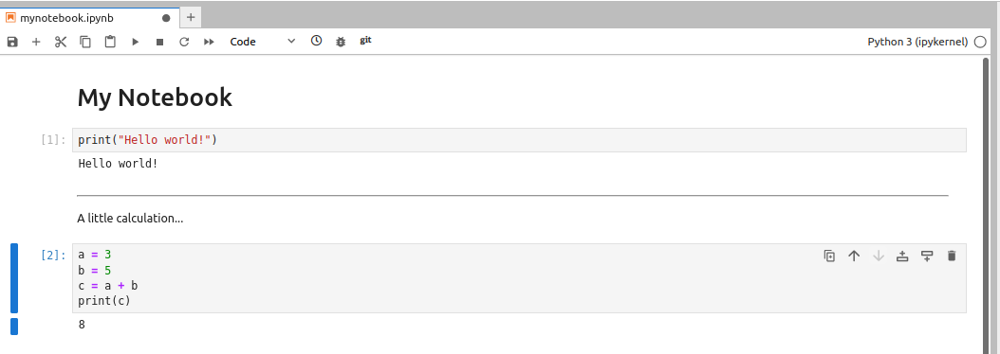
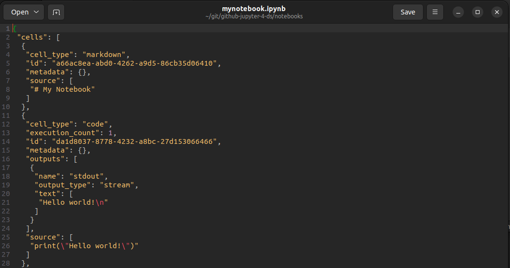

class: center, middle, gray-background

Enhancing Data Support: Practical Reproducibility
Samantha Wittke
CSC - IT Center for Science
Outline
.left-column50[ Intro and practicalities
GitHub
Version control
Creating a repository
Contributing to a repository
Version control wrap up ]
.right-column50[ Break
Jupyter
Computational notebooks
Basic features
Where to go from here ]
Questions
.left-column50[ Ask at any time -> Zoom chat or raise hand ]
.right-column50[
]
Chatter
.left-column60[
Type your response into the chat, but WAIT to hit enter
Listen for the countdown (three, two, one, CHAT!)
Hit enter and watch the responses!
]
.right-column30[
]
Two perspectives
.left-column50[ Researcher who codes ]
.right-column50[ Research support ]


TODO: Overview: In terms of code, what needs to be shared/documented to enable reproducibility + replicability
.quote[Code that works and is shared is not the same as reproducible code]
Version control
Version control is the practice of tracking and managing changes over time.
You can think of version control like regularly taking a photo (“snapshot”) of your work.
GitHub
-> one place to find the source of software, webpages, presentations, books, games, …
…under development
and a place to collaborate and share
Git and GitHub
.left-column50[ Git: Tool/format for version control (others: Subversion, Mercurial) ]
.right-column50[ GitHub: Service that provides hosting for Git repositories with a nice web interface -> Share and collaborate (others: GitLab, Codeberg) ]
???
Git: Command line or inbuilt (VSCode etc)
Repositories - a place to store
.quote[A repository is the most basic element of GitHub. It’s a place where you can store your code, your files, and each file’s revision history. Repositories can have multiple collaborators and can be either public or private.]
???
Personal or Organization namespace
Clone - download

.quote[…get the latest (working) version on your computer]
GitHub - single developer workflow

???
Local development -> snapshot to history (using git)
-> GitHub repository for sharing, storage, safekeeping
Commit - a snapshot
.left-column50[
Snapshot of current state of your repository … like taking a picture with metadata ]
.right-column50[
Who?
What?
Why? -> Commit message!
When?
]
My own GitHub repository - continue work locally
Clone: get a copy to my computer
Work on it, make updates, …
Commit: take snapshots of units of work (one or many)
Push: submit snapshots to GitHub
Pull: Get latest version from GitHub

My own GitHub repository - continue work on GitHub
Work on it, make updates, …
Commit: take snapshots of units of work (one)
Branches and merge

Image created using https://gopherize.me/ (inspiration).
Pull request - making a contribution

A request to merge.
GitHub issues
Inform, ask and collaborate
GitHub issues
Not to complain
Fork
.fat[github.com/myusername/arepo -> github.com/yourusername/arepo]
Propose changes
Use someone elses work as starting point
.quote[Useful when you cannot directly edit.]
Making a suggestion - Full workflow GitHub
Suggest idea: Issue
Discussion -> OK
Separate your work: branch / fork
Work: work - commit (one or more)
Suggest work: Pull request
Accept: merge
-> You made it to history!
Making a suggestion - Full workflow local
Suggest idea: Issue
Discussion -> OK
Get the work: (fork) - clone - pull
Work: work - add - commit (one or more)
Put it on GitHub: push
Suggest work: Pull request
Accept: merge
-> You made it to history!
Demo: Starting new
Create a new repo
Namespace
Name
Description
README
LICENSE
.gitignore
Demo: Add new file
edit
commit
main
History
Summary - words
repository issue pull request clone commit fork branch
What to track using Git(Hub)?
.left-column50[
Software
Scripts
Documents
Manuscripts
Configuration files
Website sources
Data ]
.right-column50[
Secrets
Passwords
Binaries
Files that are difficult to diff
Files generated from builds ]
???
Software (this is how it started but Git/GitHub can track a lot more)
Documents (plain text files much better suitable than Word documents)
Manuscripts (Git is great for collaborating/sharing LaTeX or Quarto manuscripts)
Demo - exploring an existing repo
History
Branches
Forks
Issues
Pull requests
Demo - contribute
Issue
Fork / Branch
Work
Pull request
New file vs changing file
Is sharing work on GitHub FAIR?
Findable?
Accessible?
Interoperable?
Reusable?
=> Support yes, but GitHub link is not persistent! -> Zenodo, …
.footnote[Barker, M., Chue Hong, N.P., Katz, D.S. et al. Introducing the FAIR Principles for research software. Sci Data 9, 622 (2022). https://doi.org/10.1038/s41597-022-01710-x]
Motivation to use Git(Hub)
“It broke… hopefully I have a working version somewhere?”
“Where is the latest version, and which one should I trust?”
“I am sure it used to work. What changed, when, and why?”
“When did this problem appear?”
“Something looks different — what was updated, and who did it?”
Summary - GitHub
GitHub: Collaborate and share with others and yourself
Chatter
class: center, middle, inverse
Break
Jupyter

.quote[A tool for people who write code]
Executable notebooks
…
Researcher perspective
Exploration
Publish a paper
Sharing narrative
Executable Notebook to test
???
code, notes/explanation, visualization
Coding in the terminal

Script: summary

Notebooks: interactive

Demo usecase: Protopyping / Exploration
Create notebook - naming
Create cells - code / markdown
Execute cells
Restart and run all
Demo usecase: Teaching
Prefilled
Exercises as rendered text
Automatic checks
Demo usecase: Sharing
Tutorial / Walkthrough -> Let others explore
Reproducibility
Code -> supports good practices, modularity Environment (Jupyter is part of that) needed
Under the hood

IPYNB -> JSON
Version control possible, but more limited benefits
Moving away from Jupyter
Endpoint
HPC Support
Limits:
use as tool from terminal
multi parameter/data -> efficiency
Summary
Great tool for prototyping or sharing alongside publications
Acknowledgement
CodeRefinery lesson
Logos are companies own
Icons from UXWing